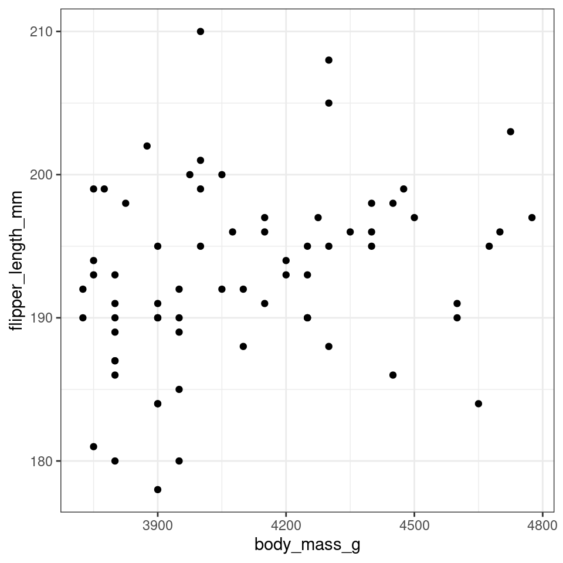
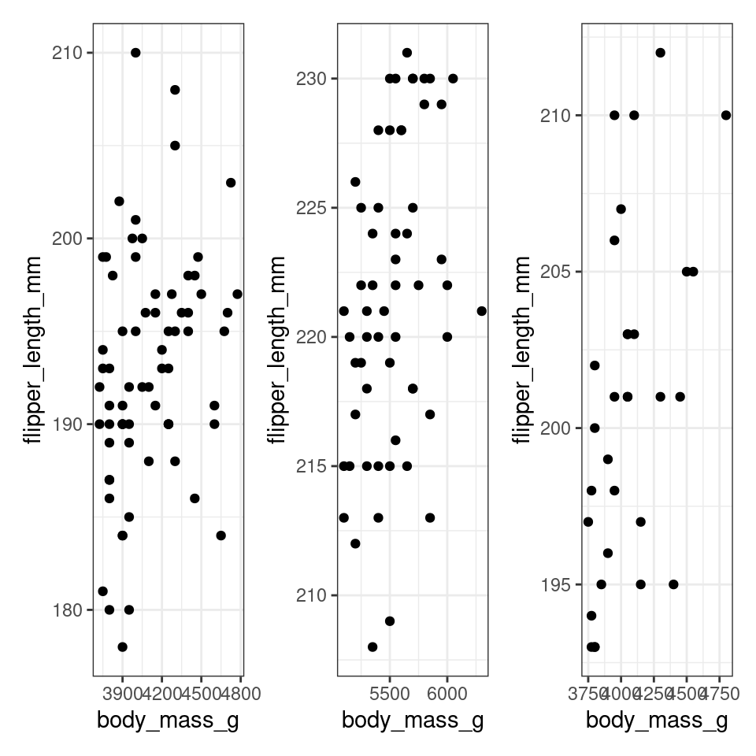
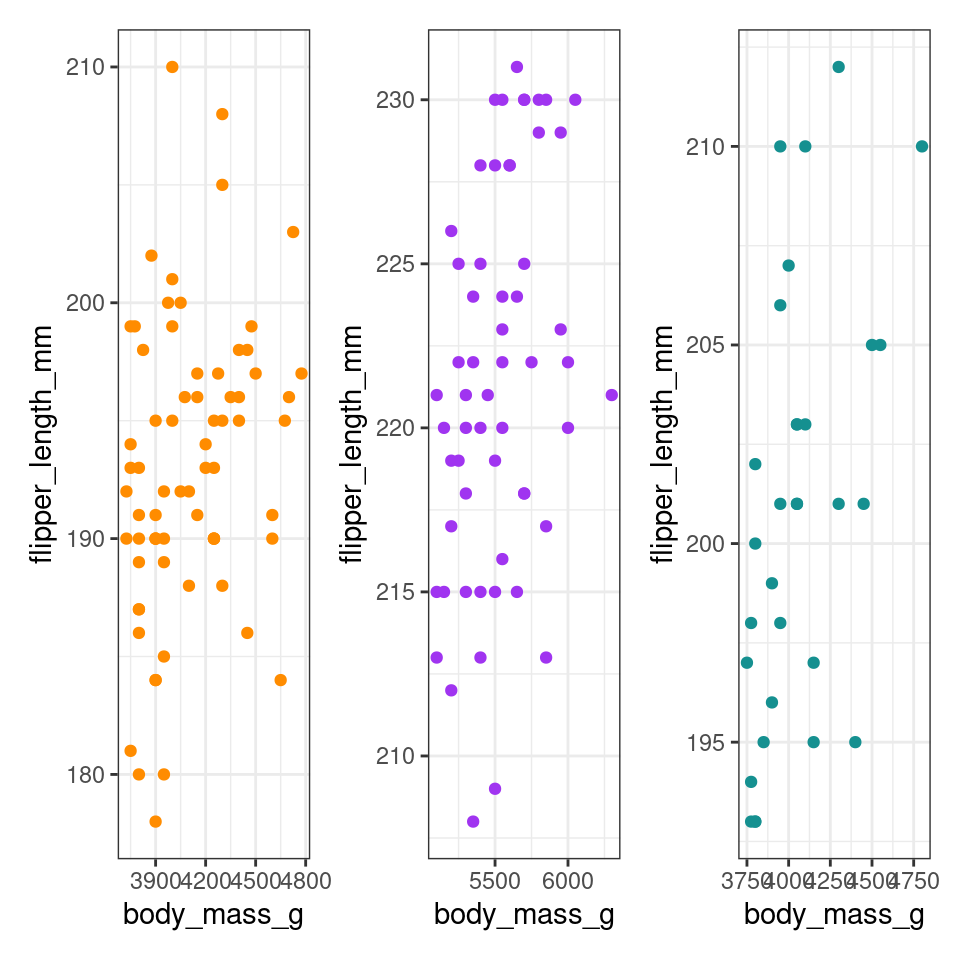

12 Purrr
The purrr::map() family of functions are the tidyverse equivalent of apply
The base equivalent to map() is lapply(). The only difference is that lapply() does not support the helpers that you’ll learn about below, so if you’re only using map() from purrr, you can skip the additional dependency and use lapply() directly.
The basic syntax is map(.x = SEQUENCE, .f = FUNCTION, OTHER ARGUMENTS). In a bit more detail:
.x= are the inputs upon which the .f function will be iteratively applied - e.g. a vector of jurisdiction names, columns in a data frame, or a list of data frames.f= is the function to apply to each element of the .x input - it could be a function like print() that already exists, or a custom function that you define. The function is often written after a tilde ~ (details below). A few more notes on syntax:If the function needs no further arguments specified, it can be written with no parentheses and no tilde (e.g.
.f = mean).You can use
.x(or simply.) within the.f = functionas a placeholder for the.xvalue of that iteration

The output of usingmap() is a list - a list is an object class like a vector but whose elements can be of different classes. So, a list produced by map() could contain many data frames, or many vectors, many single values, or even many lists! There are alternative versions of map() explained below that produce other types of outputs (e.g. map_dfr() to produce a data frame, map_chr() to produce character vectors, and map_dbl() to produce numeric vectors).
Basic map() will always return a list, other variants return different data types.Unlike apply, map will ONLY return one type of data, removing the potential for changing data types that occasionally happens when using apply.
12.2 more maps
map() always returns a list, which makes it the most general of the map family because you can put anything in a list. But it is inconvenient to return a list when a simpler data structure would do, so there are four more specific variants: map_lgl(), map_int(), map_dbl(), and map_chr(). Each returns an atomic vector of the specified type:
| Function | Data type returned |
|---|---|
map_lgl() |
returns a logical |
map_int() |
returns an integer vector |
map_dbl() |
returns a double vector |
map_chr() |
returns a character vector |
map_df() |
returns a data frame/tibble |

These specialized map functions are “type-safe” and will fail with incorrect return type.
This is safer than using functions like sapply() which tries to simplify results and could return a list, vector or matrix depending on input.
# map lgl always returns a logical vector
map_lgl(df_list, is.double)
# a b c d e f g h
# TRUE TRUE TRUE TRUE TRUE TRUE TRUE TRUE
# map_dbl always returns a double vector
map_dbl(df_list, mean)
# a b c d e f g h
# -0.38315741 -0.11817071 -0.38794682 -0.76619306 -0.60979706 -0.27886474 0.61659223 -0.04230209
# map_int always returns an integer vector
map_int(df_list, ~.x |> mean() |> round())
# a b c d e f g h
# 0 0 0 -1 -1 0 1 0
# map_int always returns an integer vector - note this comes with a deprecated coercion warning - use as.character()
map_chr(df_list, mean)
# a b c d e f g h
#"-0.383157" "-0.118171" "-0.387947" "-0.766193" "-0.609797" "-0.278865" "0.616592" "-0.042302"
# map_df always returns a dataframe
map_df(df_list, mean)
# a b c d e f g h
# <dbl> <dbl> <dbl> <dbl> <dbl> <dbl> <dbl> <dbl>
# 1 -0.383 -0.118 -0.388 -0.766 -0.610 -0.279 0.617 -0.0423purrr uses the convention that suffixes, like _dbl(), refer to the output. All map_*() functions can take any type of vector as input.
12.3 Anonymous functions
There are multiple ways of structuring a map() call
12.3.1 What's up with ~?
Instead of using map() with an exisiting function, we can use inline anonymous functions as demonstrated with apply()
## a b c d e f
## -0.38315741 -0.11817071 -0.38794682 -0.76619306 -0.60979706 -0.27886474
## g h
## 0.61659223 -0.04230209But this is quite verbose we can use ~ to support a shortcut
## a b c d e f
## -0.38315741 -0.11817071 -0.38794682 -0.76619306 -0.60979706 -0.27886474
## g h
## 0.61659223 -0.04230209It look a little quirky but you to refer to . for argument functions.
Reserve this syntax for short and simple functions. A good rule of thumb is that if your function spans lines or uses {}, it’s time to give it a name.
12.4 map with nested dataframes
Nested data frames in tibbles, a data structure in R, allow you to store complex and structured data within a single column of a tibble. This feature is particularly useful when dealing with hierarchical or nested data, such as lists, data frames, or even other tibbles.
To use the penguins data you need to load it. Either run your cleaning script or run readRDS on the file you made
Nested data frames in tibbles can be particularly useful when working with map functions, like purrr::map()to apply a function to elements within each nested structure.
First we use the nest() function and select how we want to nest our data
nested_penguins <- penguins |>
nest(data = -species)
nested_penguinsA tibble:3 × 2
species
<chr>
data
<list>
Adelie <tibble>
Gentoo <tibble>
Chinstrap <tibble>
3 rows
We can run iterative functions on these lists - such as generating new dataframes and adding them to new columns. Here we wish to keep only those penguins who are larger than the average for their species body weight.
Note at this stage we are replicating iteration that can be achieved by using
group_by()actions.
nested_heavy_penguins <- penguins |>
nest(data = -species) |>
mutate(new_data = map(data, ~ .x
|> filter(body_mass_g > mean(body_mass_g, na.rm = T)))
)# A tibble: 3 × 3
species data new_data
<chr> <list> <list>
1 Adelie <tibble [152 × 19]> <tibble [70 × 19]>
2 Gentoo <tibble [124 × 19]> <tibble [58 × 19]>
3 Chinstrap <tibble [68 × 19]> <tibble [31 × 19]>
We can now produce individual plots for each nested dataframe:
plots_df <- nested_heavy_penguins |>
mutate(scatterplots = map(new_data, ~
ggplot(data = .x, aes(x = body_mass_g, y = flipper_length_mm)) +
geom_point()
))Plots can now be called in a number of ways:
plots_df[[1,4]]
plots_df$scatterplots[[1]]
12.4.1 walk
If we wish to see all of the plots at once we can use purrr::walk - this is another iteration function, where the primary output is "silent" - we do not wish to see outputs printed in the console. This is useful for functions like plot making or writing outputs to file.
gg objects are not the only type of objects that can be created using map() and mutate(). Another application of these two functions is fitting models to our data and storing the results in a new column. For example, we could use map() and mutate() to fit a linear regression model to the x and y columns and store the model output in a new column
To view all the plots together, we can use the patchwork::wrap_plots() function
library(patchwork)
plots_df$scatterplots |> wrap_plots()
12.5 map2
map2 is a versatile function in the purrr package for R that allows you to iterate over two input vectors or lists in parallel, applying a specified function to pairs of corresponding elements. It's particularly useful when you need to perform operations that depend on elements from two separate input sources simultaneously, offering a powerful way to combine and process data in a pairwise manner.

Here is a quick example building on our plot making function - where we are able to alter the colour of the plots according to a
pal <- c(
"Adelie" = "#FF8C00",
"Chinstrap" = "#A034F0",
"Gentoo" = "#159090")
plots_df <- nested_heavy_penguins |>
mutate(scatterplots = map2(.x = new_data, .y = pal, ~
ggplot(data = .x, aes(x = body_mass_g, y = flipper_length_mm, colour = .y)) +
geom_point() +
scale_colour_identity()+
ggtitle(names(.y))
)
)
plots_df$scatterplots |>
wrap_plots()
12.6 pmap
While map works with a single vector, and map2 works with two vectors, pmap is a generalised version that works on any number of vectors. pmap also has all of the variants that we have seen before.
Parallel Mapping: pmap stands for "parallel map." It applies a function to the corresponding elements of multiple input lists (or data frames).
Flexibility: You can provide any number of lists or vectors to pmap.
Named Arguments: If you pass a data frame to pmap, it treats each column as a separate list.
Here's the basic syntax for pmap:
pmap(.l, .f, ...)
# .l is a list of vectors or a data frame.
# .f is the function you want to apply.
# ... are any additional arguments to the function .f.
Example
# Vectors representing dimensions of three different boxes
lengths <- c(2, 3, 5)
widths <- c(4, 2, 6)
heights <- c(3, 5, 2)
# Define a function to compute volume
compute_volume <- function(length, width, height) {
length * width * height
}
# Use pmap to apply compute_volume to each combination
volumes <- pmap(list(lengths, widths, heights), compute_volume)
# Print the result
print(volumes)## [[1]]
## [1] 24
##
## [[2]]
## [1] 30
##
## [[3]]
## [1] 60Remember though R is designed to work with vectors, dataframes and vectorised functions. Allowing us to apply operations over dataframes in a way that may be faster and more concise than using explicit iteration:
# Create a data frame with dimensions
boxes <- data.frame(
length = c(2, 3, 5),
width = c(4, 2, 6),
height = c(3, 5, 2)
)
# Define a function that takes a list (representing a row)
compute_volume_df <- function(df) {
df$length * df$width * df$height
}
compute_volume_df(boxes)## [1] 24 30 60YOUR TURN:
Use the pmap function to make three separate plots for the nested penguins data - add a title to each plot and put different geom shapes in for each plot:
12.6.1 Running different summary functions on each nested dataframe
When working with nested data frames, purrr provides the capability to apply distinct functions to each nested data frame, making it a versatile tool for performing customized and specialized operations on grouped data. This flexibility is distinct from simple operations with group_by(), as it allows you to tailor your computations to the unique characteristics of each subgroup within your nested data structure.
summary_functions <- list(
Adelie <- function(data) {
summarise(data,
mean_bill_length = mean(culmen_length_mm, na.rm = T),
mean_flipper_length = mean(flipper_length_mm, na.rm = T))
},
Chinstrap <- function(data) {
summarise(data,
max_bill_length = max(culmen_length_mm, na.rm = T),
max_flipper_length = max(flipper_length_mm, na.rm = T))
},
Gentoo <- function(data) {
summarise(data,
min_bill_length = min(culmen_length_mm, na.rm = T),
min_flipper_length = min(flipper_length_mm, na.rm = T))
}
)
# Apply the summary functions to each species using map2
result <- nested_penguins |>
mutate(summaries = map2(data, summary_functions, ~ .y(.x)))
result$summaries12.7 Exercises
z_score() function, can you apply this using map to our df tibble?
set.seed(1234)
# a simple tibble
df <- tibble(
a = rnorm(10),
b = rnorm(10),
c = rnorm(10),
d = rnorm(10),
e = rnorm(10),
f = rnorm(10),
g = rnorm(10),
h = rnorm(10),
)
z_score <- function(x) {
(x - mean(x, na.rm = TRUE)) /
sd(x, na.rm = TRUE)
}
12.8 Reading
If you would like to practice more map() then check out this blogpost
Below are some links you may find useful